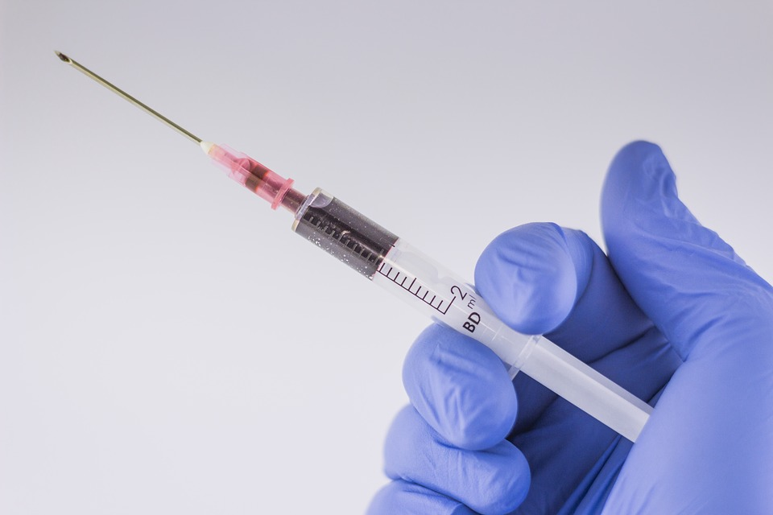

Regularly and thoroughly clean your hands with an alcohol-based hand rub or wash them with soap and
water. Washing your hands with soap and water or using alcohol-based hand rub kills viruses that
may be on your hands.
Maintain at least 1 metre (3 feet) distance between yourself and others. When someone coughs,
sneezes, or speaks they spray small liquid droplets from their nose or mouth which may contain virus.
If you are too close, you can breathe in the droplets, including the COVID-19 virus if the person has
the disease.
-Avoid going to crowded places. Where people come together in crowds, you are more likely to come
into close contact with someone that has COIVD-19 and it is more difficult to maintain physical
distance of 1 metre (3 feet).
Make sure you, and the people around you, follow good respiratory hygiene. This means covering your
mouth and nose with your bent elbow or tissue when you cough or sneeze. Then dispose of the used
tissue immediately and wash your hands. This because droplets spread virus. By following good respiratory
hygiene, you protect the people around you from viruses such as cold, flu and COVID-19.
Stay home and self-isolate even with minor symptoms such as cough, headache, mild fever, until you
recover. Have someone bring you supplies. If you need to leave your house, wear a mask to avoid
infecting others. By avoiding contact with others, you will protect them from potentially contracting COVID-19 and other
viruses.
If you have a fever, cough and difficulty breathing, seek medical attention, but call by telephone in
advance if possible and follow the directions of your local health authority. Why? National and local
authorities will have the most up to date information on the situation in your area. Calling in
advance will allow your health care provider to quickly direct you to the right health facility. This
will also protect you and help prevent spread of viruses and other infections.
Keep up to date on the latest information from trusted sources, such as WHO or your local and national
health authorities. Local and national authorities are best placed to advise on what people in
your area should be doing to protect themselves.
TREATMENT

There are various vaccines for COVID-19 available as of September 2022.
There are also different types of treatment for COVID-19 available, such as Remdesivir and Paxlovid.
However, please ask a healthcare
provider if medications to treat COVID-19 are right for you beforehand.
If you feel sick you should rest, drink plenty of fluid, and eat nutritious food. Stay in a separate
room from other family members, and use a dedicated bathroom if possible. Clean and disinfect
frequently touched surfaces.
Everyone should keep a healthy lifestyle at home. Maintain a healthy diet, sleep, stay active, and make
social contact with loved ones through the phone or internet. Children need extra love and attention
from adults during difficult times. Keep to regular routines and schedules as much as possible.
It is normal to feel sad, stressed, or confused during a crisis. Talking to people you trust, such as
friends and family, can help. If you feel overwhelmed, talk to a health worker or counsellor.